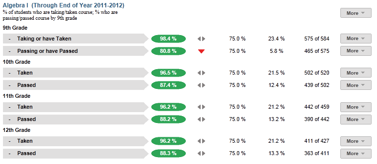
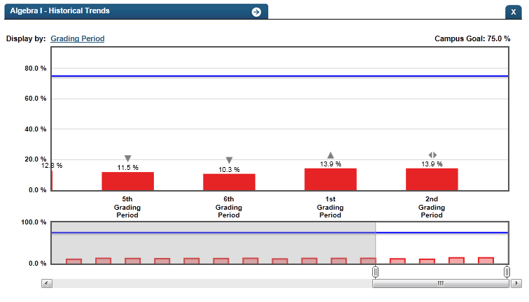
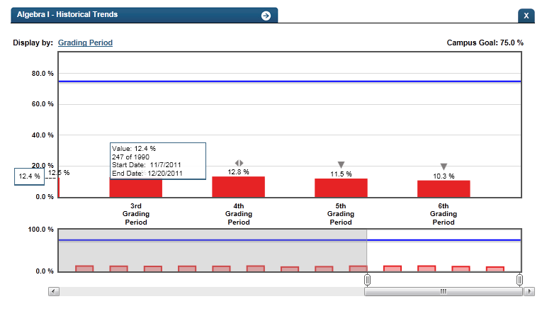

Dashboard Metrics


Algebra I
Background
Campus Dashboard Metrics
Because of the importance of Algebra I as the foundation for advanced mathematics attainment, many school districts have incorporated metrics on Algebra completion into their internal performance management dashboards. In focus group discussions conducted with educators, the Algebra I metric, as presented on screen shots of the campus dashboard, was considered useful by only 89% of respondents. This represents a significantly lower usefulness rating than those for other Academic Progress metrics, indicating the potential need for additional training on the importance of Algebra I as a predictor of long-term student success.
Primary Metric
- Algebra I: percent of students who are currently taking or have taken Algebra I in a 8th or 9th grade and the percent of students who are currently passing or have passed Algebra I by 8th or 9th grade, with comparison to campus goals.
Related Metric
None.
User Interface
Dashboard Example
Figure 1 shows the Algebra I metric as seen on the campus dashboard.

Figure 1 Ed-Fi Algebra I Metric
Status Definition
The metric identifies the percentage of students who are
- taking Algebra I or have previously taken Algebra I by 8th grade for middle school and 9th grade for high school
- passing or have passed Algebra I by 8th grade for middle school and 9th grade for high school
The Status indicator is determined by campus-specific thresholds (campus goals) which are set at the district level. The Ed-Fi dashboards default campus goals are
- taking or taken Algebra I = 75%
- passing or passed Algebra I = 75%
The recommended default thresholds for “passing” a course are:
- Letter grade is C or above
- Numeric grade is equal to or greater than 70
The recommended default threshold for "passed" a course is:
- Received a full credit
Table 2 lists the Status indicators and trend comparisons as seen on the campus dashboard.
Metric Status Indicators | Comparisons | |||
Metric Name | Sub-metric Name | Metric Status Indicator | Trend | Campus Goal (Delta) |
Algebra I | Taking or have Taken by 8th grade for middle school or 9th grade for high school | Red (Percentage) = if percentage of students is less than campus goal Green (Percentage) = if percentage of students is greater than or equal to campus goal | Current year to prior year | Campus goal and the calculated percentage of students taking or have taken Algebra I by the 8th grade for middle school or 9th grade for high school |
Passing or have Passed by 8th grade for middle school or 9th grade for high school | Red (Percentage) = if percentage of students is less than campus goal Green (Percentage) = if percentage of students is greater than or equal to campus goal | After second grading period, compare to prior grading period | Campus goal and the calculated percentage of students passing Algebra I by the 8th grade for middle school or 9th grade for high school | |
a) The Value column displays the number of students taking/taken Algebra I and passing/passed Algebra I by the 8th grade for middle school or 9th grade for high school out of the total number of students.
Trends
Trend Definition
Trend Indicators: Objective is to indicate Algebra I | |||
| Up green | If the value for the current time frame is more than 5 percentage points higher than the prior time frame, then display a gray arrow trending upward. | |
| Unchanged | If the value for the current time frame is less than or equal to 5 percentage points higher or less than or equal to 5 percentage points lower, then display two gray arrows pointing outward indicating no direction. | |
| Down red | If the value for the current time frame is more than 5 percentage points lower than the prior time frame, then display a gray arrow trending downward. | |
The trend does not show for the first occurrence of a time frame since data is not available.
Delta
The Delta column is the absolute value of the difference between the campus percentage (Status column) and the campus goal (Campus Goal column).
Delta Indicators: Objective is to indicate Algebra 1 | |||
Metric Name | Sub-Metric Name | Campus Goal | Delta |
Algebra I | Taking or have Taken by 8th grade for middle school or 9th grade for high school | Set campus goal | Red (Delta Percentage) = if the percentage of students is less than the campus goal Black (Delta Percentage) = if the percentage of students is greater than or equal to the campus goal |
Passing or have Passed by the 8th grade for middle school or 9th grade for high school | Set campus goal | Red (Delta Percentage) = if the percentage of students is less than the campus goal Black (Delta Percentage) = if the percentage of students is greater than or equal to the campus goal | |
Periodicity
The data is most actionable when loaded at the end of each grading period after grades are posted. Grading periods vary by state and district.
Recommended Load Characteristics | |
Calendar | Throughout school year |
Frequency of data load | Once each grading period |
Latency | 6-9 weeks |
Interchange schema | Interchange-StudentGrade.xsd |
Tooltips
The standard tool tips for the metric definition, column headers, and help functions display for this metric.
 is ‘No change from the prior period'
is ‘No change from the prior period' is ‘Getting worse from the prior period’
is ‘Getting worse from the prior period’ is 'Getting better from the prior period'
is 'Getting better from the prior period'
Business Rules
The Algebra I metric displays two sub-metrics, each with specific business rules as described here.
Percentage taking or have taken Algebra I
The first sub-metric indicates the percentage of students that are currently taking or have taken Algebra I by 8th grade for middle school or 9th grade for high school. The data to compute this metric is taken from either the student transcript or from their list of current courses. Algebra I can be defined by either a state course code or a locally-defined course code.
If the Algebra I course code does not appear on a student’s transcript and the student is currently taking the next course in the mathematics sequence (e.g., Algebra II or higher), the Ed-Fi dashboards assume the student has passed Algebra I. Missing course codes may be due to the following cases:
- Ninth grade students may not have middle school course information on their transcripts.
- Students who are transferring in during the school year may not have transcripts transferred and/or recorded in the campus system.
Percentage passing or have passed Algebra I
The second sub-metric indicates the percentage of students who previously passed or are passing Algebra I. For business rules, if the student
- is currently taking Algebra I, the current grading period grade is used to determine passing status.
- has taken and failed Algebra I and is not currently taking Algebra I, the failed grade status from the student transcript is used.
- does not have Algebra I in their course transcript and is currently taking a higher-level mathematics class, the Ed-Fi dashboards assume that the student has already passed Algebra I.
The length of the grading period is configurable and is defined by the district – typically either 6 or 9 weeks.
Data Assumptions
- Historical student course information is available through the student transcript.
- Current student grade information is available through the latest reported grading period.
- Course grades are numeric or letter-based.
- District sets the value that drives the campus goals.
Computed Values
Table 6 defines how values are calculated for this metric. The result of the calculation displays in the Status column on the student dashboard.
Metric Values | ||
Algebra I | Percent of Students Taking or Taken Algebra I by 8th grade for middle school or 9th grade by high school | Number of students that (are current taking Algebra I and are passing Algebra I) OR |
Percentage Passing or Passed Algebra I by 8th grade for middle school or 9th grade for high school | For a student who has previously taken Algebra I, the determination of whether the student has passed Algebra I is computed as follows:
For a student who is taking Algebra I, the determination of whether the student is passing Algebra I is computed as follows:
| |
Calculation Notes
Percentage taking or have taken Algebra I
The cohort is the set of current students across all grades in the campus with transcript data available and for whom grades have been loaded for the last reported grading period, except for:
- Transfer (late enrollment) students with the following information missing from their transcript: student is or has taken Algebra I or if the transfer student is or has taken the next course in the mathematics sequence following Algebra I.
Percentage passing or have passed Algebra I
The cohort is the set of current students who:
- are currently taking Algebra I, or
- previously taken Algebra I, or
- are currently taking a more advanced mathematics course than Algebra I, or
- have taken a more advanced mathematics course than Algebra I
For a student with an incomplete transcript who is taking or has taken a more advanced mathematics course than Algebra I, the Ed-Fi dashboards assume the student has passed Algebra I.
Data Anomalies
Date of Refresh
Best practice is for the date of last data refresh to appear next the metric in the following format:
- (Through Third Grading Period)
Missing Credits
Students may have a final grade of passing on their transcript but not have a credit entered. The Ed-Fi dashboards assume that the credit was not earned and therefore the student did not pass the course.
Implementation Considerations
Student Identity
Maintaining a correct and consistent student identity is at the center of any education data system. Most systems use some sort of unique identifier. However, sometimes this identifier is entered incorrectly or sometimes different systems use different identifiers.
The UDM XML supports the interchange of multiple types of identifiers. The StudentReference is a complex type within the UDM to maintain the referential integrity of the student (that is, ensuring that the data associated with each student is accurately associated with the right student). The complex type of the student reference assists with implementing the accurate matching algorithm to identify a student by utilizing any of the individual attributes (e.g., Student Unique State ID, Student ID, Campus Local ID (with Campus ID), Name and Birth Date). For example, if the Student Unique State ID is unknown, you can find the student’s identity by their Student ID, First Name, Last Name and Birth Date.
Local Algebra I Courses
If the district offers locally-defined courses that are considered equivalent to Algebra I, developers must include these additional course codes.
Numeric or Letter Grading System
The metric should support both numeric and letter grading systems.
Campus Goals
Best practice is to set the goals for each campus at the district level. A secure mechanism is required to allow the district to set and maintain those goals.
Aggregate Metric Inclusions and Exclusions of Special Education Students
Each campus's aggregate metrics may include or exclude the special education population, depending on the intended purpose for a specific metric and campus goal.
Drill Downs
Drill Down Views
The dashboards include the option to drill down and see more detail that is associated with a metric. Table 7 lists the drill down views that are recommended for this metric.
| Advanced Analysis | Break down of student test assessment (commended, not commended, met standard, and didn't meet standard) (future implementation) | |
| Historical | Graph of metric values across grading periods and years. | |
Student List | List of students who do not meet the threshold for this metric for the specified period. |
Business Rules
The Historical Graph allows the user to see historical data across multiple timeframes. As time passes, there are many bars to be displayed; therefore, the slider on the bottom allows the user to adjust the number of bars displayed as well as the time period shown. The timeframes for this metric were chosen based on educator feedback.
User Interface
Dashboard Examples
Figure 2 shows Historical Algebra I Taking/Taken as seen in the campus dashboards.

Figure 2 Ed-Fi Historical Algebra I Taking/Taken
Figure 3 shows Historical Passing/Passed as seen in the campus dashboards.

Figure 3 Ed-Fi Historical Algebra I Passing/Passed